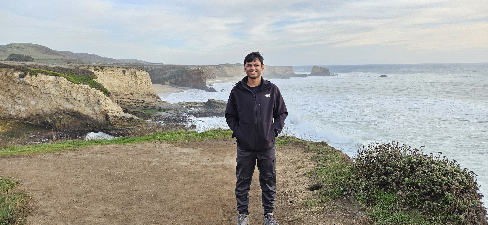

Sanjay Lakshmanan
Finite Element Analysis | Solid Mechanics
Thermal Analysis | Multiphysics | Mechanical Design
About

I graduated with a Ph.D. in Mechanical Engineering from the University of Rochester in 2022 and have 3 years of industry experience as an R&D Engineer as part of the multiphysics group at ANSYS (Canonsburg, USA). I am passionate about mechanical design utilizing my simulation capabilities using finite element analysis and computational fluid dynamics. Currently looking for mechanical design opportunities.
Skills
- Mechanical Design: 3D CAD modeling (SolidWorks, Design Modeler, SpaceClaim), GD&T.
- Simulation Tools: ANSYS Mechanical, ABAQUS, ANSYS Icepak, Flotherm, ANSYS Fluent, STAR-CCM+, COMSOL.
- Structural Analysis (FEA): Stress Analysis, Contact Mechanics, Nonlinear Material Modeling, Random Vibration.
- Reliability Physics: Thermal Cycling, Coffin-Manson (Low Cycle Fatigue), Solder Joint Reliability.
- Scripting & Automation: Python (SciPy/Pandas), APDL, C++, FORTRAN (User Subroutines).
- Data-driven Engineering: Design of Experiments (DOE), Surrogate Modeling, Reduced-order modeling, PINNs.
- Communication: Presentations to diverse stakeholders, technical writing and journal publications.
- Project Management: Cross-functional collaboration, team leadership/mentorship, multi-tasking.
Summary
Sanjay Lakshmanan
Ph.D. Mechanical Engineer with 9 years of combined R&D and academic experience in structural mechanics, thermal and multiphysics analysis. Deep expertise in evaluating consumer electronics component modules, specifically OLED displays, Compute PCBs, and high-density packaging. Proven ability to translate complex boundary value problems such as nonlinear contact mechanics and thermo-mechanical stress into robust design solutions. Adept at cross-functional collaboration and delivering insights for product design.
Education
Ph.D., Mechanical Engineering
2016 - 2022
University of Rochester, Rochester, NY, USA
Thesis title: Micromechanical Aspects of Contact Printing
My thesis contributed in detailing the simulation of adhesion, contact mechanics and stamp mechanics of shape-memory polymer stamps used in contact printing.
M.S., Mechanical Engineering
2012 - 2014
University of Rochester, Rochester, NY, USA
B.E., Mechanical Engineering
2008 - 2012
BMS College of Engineering, Bengaluru, Karnataka, India
Professional Experience
R&D Verification Engineer
Aug 2022 - May 2025
Canonsburg, Pennsylvania, USA
- Thermal Management: Benchmarked kinematic view factor updates against analytical solutions, resolving convergence instabilities in radiation solvers and enabling high-fidelity thermal prediction for complex systems.
- Developed FORTRAN user subroutines to validate user programmable features (UPF) for coupled physics phenomena such as stress migration, electromigration and plastic heat generation.
- Modeled absorbing boundary condition (ABC) using perfectly matched layer (PML) elements for structural, acoustic and piezoelectric wave propagation problems using modal and harmonic analyses.
- Validated thermal shell, multiphysics elements (22x) for ANSYS releases 23R1, 23R2, 24R1, 24R2 and 25R1.
Graduate Research Assistant
Jan 2016 - May 2022
Rochester, NY, USA
Thermal Analysis of GLAD (Glancing Angle Deposition) Films
Collaborators: Marcela Mireles, Brittany N. Hoffman, John C. Lambropoulos, and Stavros G. Demos
- Analyzed transient thermal response of thin GLAD films (~nm) under pulsed CO2 laser using ABAQUS.
- Implemented Gaussian thermal flux and nonlinear temperature dependence of absorption coefficient in fused silica using FORTRAN.
- Simulated localized melting and thermal transport in nanostructured silica (GLAD) waveplates processed in a high-vacuum chamber.
- Balanced analytical and computational approaches by first developing a 1D analytical model to understand thermal property effects, followed by a rigorous 2D axisymmetric numerical model in ANSYS.
- Validated that processing must occur under high vacuum to prevent void fraction trapping. Correlated temperature-dependent material properties to establish a predictive direct-write protocol for precision optics manufacturing.
Twyman Effect in Thin Curved Optics
Collaborators: John C. Lambropoulos
- Quantified normal deflections (within 2%) due to grinding induced thin-film stresses in thin curved optics.
- Performed finite element simulations to predict local thickness effects on Twyman deflections.
- Quantified grinding-induced deflections in thin components using Finite Element simulations. Correlated non-linear geometrical changes and residual stresses to predict curvature.
Micromechanical Aspects of Contact Printing
Collaborators: John C. Lambropoulos, Mitchell Anthamatten, Alexander Shestopalov
- Mechanical Design & Validation: Investigated the micromechanics of contact printing for delicate OLED screens and display components.
- Simulated complex surface-surface adhesion behavior between PCL stamp and glass surface using nonlinear piecewise traction-separation law to within 3% of experimental pull-off force values.
- FEA & Contact Mechanics: Utilized targeted plane stress models to analyze complex buckling problems and evaluate pattern collapse mechanisms during component transfer.
Portfolio
- All
- Research
- Design
- AI

{kind=link}
{kind=link}